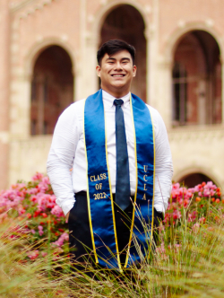

|  |
John Jonah Magbitang CubangbangNeuroscience (B.S.) University of California, Los Angeles - Class of 2022 Contact Me:Email: johnjonahc@gmail.com |
I am a recent graduate from the University of California, Los Angeles (UCLA) with a Bachelor of Science degree in Neuroscience. I am currently seeking an entry-level Research Assistant/Technician position. In the past, I served as an undergraduate research assistant under Dr. Masmanidis with research surrounding corticostriatal neurons and how they affect reward-conditioned behavior as well as abberant neural activity in neurodegenerative disorders such as Parkinson's Disease. I have experience in histology, immunihistochemical staining, and mice handling.
For any inquiries, please email me or contact me through any of the means listed above.
| Lamonica's International Pizza Dough, Inc., Los Angeles, California | January 2022-June 2022 |
| Cashier/Line Cook | |
|
|
| Masmanidis Lab at UCLA, Los Angeles, California | January 2020-August 2021 |
| Undergraduate Research Assistant | |
| PI: Sotiris Masmanidis | |
|
|
| Sportsmedicine Hawaii, Honolulu, Hawaii | June 2019-August 2019 |
| Volunteer | |
|